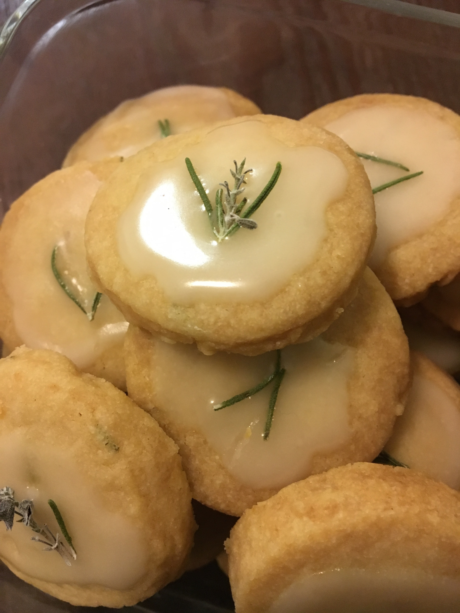

My name is Frances, but you can call me Frankey. I'm currently a project manager for a market research firm and have been in the market research industry for the last 6 years. As a project manager, I have been able to exercise and hone my ability to study and understand several different industries. Being a part of a consulting firm, my clients' main industries have ranged from retail, apparel, food and automotive to name a few. By far, however, the most interesting industry I have encountered is Tech.
My undergraduate studies were focused on Family and Consumer Sciences, with a focus on Consumer Affairs. My studies revolved around consumer behavior and both psychological and socioeconomic drivers behind their behavior. My first job after gaining my Bachelor's degree would be as an entry-level customer support agent for an up and coming rewards website. I was able to extend my research and focus on interacting with a specific type of consumer: the website user. For two and a half years I learned first-hand about the most common problems our users experienced and in turn what technical solutions could be offered to the users as well as technical solutions created on the back end. The company was a start-up in Silicon Valley and I joined the team about 1 year before the parent company experienced its first external investment. I went on to gain more proficiency in the culture and collaborating with our web developers, becoming a bridge between the tech and user experience by becoming the official company Facebook moderator, no longer interacting privately in Zendesk Tickets, but publicly to a number of users at a time.
My interests turned slightly away from tech as I further explored consumer behavior from a marketing stand-point. I entered the Market Research industry as a junior project manager for a company that 'supplied' quantitative studies with participants. The main focus, again, were participants joining through on-line panels. 5 years later and I am now a project manager at my 2nd market research company, where I specialize in both quantitative and qualitative studies. My studies/projects are fielded both on-line through a network of platforms where users can virtually interact as part of a research panel as well as through more traditional means of surveying (i.e. in-person focus groups, in-home user tests, and more).
In the past year I have gotten married, moved into our first home in the San Fernando Valley and began attending a full-stack bootcamp through the UCLA Extension program. I have further polished my HTML and CSS skills, while learning about Javascript, Firebase, APIs and jQuery in the most recent months. I continue to attend this bootcamp through the end of 2019, now encountering lessons on back-end coding, specifically MongoDB, Express.js, Node.js and React. My goal is to successfully pivot my career to be more tech-centered. I am driven by my fascination with building tools that solve the unique and ever-evolving needs of the modern consumer. I believe that my background in market research and my motivation to create and find solutions are the driving forces that will allow my time at this full-stack bootcamp to be my first big step towards a long and successful career in Tech.
Aside from coding, I also enjoy a variety of creative activities such as building with Legos, sketching, paper quilling, playing the piano, and cooking.